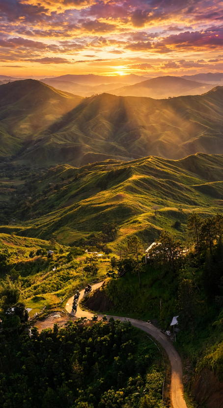

Most people who reach Bukidnon stop at Manolo Fortich, ride a zipline and head back down to Cagayan de Oro before dark. Keep driving south on the Sayre Highway, though, and the plateau opens up: Malaybalay, the provincial capital, sits a little over 600 meters above sea level, and Valencia beyond it has a quiet crater lake that few visitors ever see.
This guide treats the two cities as one unhurried road trip. It covers how long to give it, how to get up the plateau without a car, what to see in each city, where to sleep, and the details that catch first-timers out, from cold evenings to climbing permits.
Fares, fees and opening times in the highlands change quietly and are rarely posted online, so use the figures here for planning and confirm them with the city tourism offices or the place itself before you set out.

How Many Days to Give It
Two days is the sweet spot. Day one goes to Malaybalay, day two to Valencia and Lake Apo, with a night in either city between them. A single day is possible if you only want the abbey and a look around the capital, but you will spend a large share of it on the road.
There is also a third option that suits anyone travelling further around Mindanao: enter through Cagayan de Oro and leave through Davao. Bukidnon sits between the two, so a one-way traverse turns the highlands into a stopover rather than a detour, with no backtracking up and down the same highway.
Getting Up the Plateau
Buses and vans bound for Bukidnon leave from Agora Bus Terminal in Cagayan de Oro. Ride anything signed for Malaybalay, Valencia or Davao and tell the conductor where you are getting off. Laguindingan Airport is the closest airport, and the provincial government puts the trip from there to Malaybalay at about two to three hours by bus, van or private car.
Coming the other way, buses from Davao's Ecoland terminal run by Rural Tours, Pabama Tours and Super 5 cover the climb in roughly three to five hours, depending on where you stop. Fares are posted at the terminals, so carry cash and keep small bills handy for the rides that follow.
Inside each city, tricycles and habal-habal cover the short hops. For sites outside the town centers, hiring a van or a driver for the day costs more but saves you from waiting at the roadside, and it is worth splitting with a group. Agree on the price and the stops before you leave.
Day One: Malaybalay
The Abbey of the Transfiguration
The pyramid-shaped church in Barangay San Jose is the reason many people make the trip. Benedictine monks founded the monastery in 1983, and National Artist Leandro Locsin designed the church, which opened in 1996 with a shape drawn from the Ifugao hut. The altar is a single volcanic boulder found near the abbey.
Next to the church, a small museum holds liturgical vestments sewn by one of the monks, a former fashion designer. The monks also roast their own coffee, Monks Blend, sold at the gift shop and the abbey café. Dress as you would for any church, keep your voice down during prayers, and ask before photographing the monks. The abbey runs a small guest house with meals for anyone who wants a quiet night, so call ahead if you hope to stay.
The Capital Itself
Back in town, the Provincial Capitol Grounds and the Kaamulan grounds are where Bukidnon holds its biggest public events, and the Bukidnon State University Museum covers the history and indigenous heritage of the province. The Kaamulan Tree Park offers a shaded walk if you need a break from the road.
Malaybalay's official tourism list also names Nasuli Spring for a cold swim and Aniningpan Ridge, a grassland ridge known for a sea of clouds at dawn. Neither is set up like a theme park, so ask the city tourism office about access, guides and fees before heading out.
Day Two: Valencia and Lake Apo
Valencia sits a short ride south on the same highway and is the more populous of the two cities, with plenty of shops for supplies. Its best-known sight is Lake Apo in Barangay Guinoyoran, about 11 kilometers west-southwest of the city center.
The lake is a small crater lake of about 24 hectares, sitting around 640 meters up and ringed by hills. In the late 1990s it was named the cleanest inland body of water in Northern Mindanao. Raft cottages float on the water, which makes it a good place to sit with a packed lunch rather than a place to tick off in ten minutes. The final stretch is easiest with a habal-habal or a hired vehicle, and the drivers in town know the way.
If you are heading on to Davao, leave Valencia by early afternoon so the descent is done in daylight. If you are going back north, the return to Cagayan de Oro is a long ride, so start early.
Where to Base Yourself
Pick Malaybalay if the abbey and a quiet evening matter most, or if you want an early start for a sunrise ridge. Pick Valencia if you are continuing south, since it shortens the next day's ride. Either works for a two-day loop. Book ahead around the Kaamulan Festival, when rooms in the capital get harder to find.
Mt. Kitanglad Needs Its Own Plan
The long range on the western horizon is Mt. Kitanglad, a protected area, and its peaks include Mt. Dulang-dulang. This is not a side trip to slot into a road trip. Entry needs a permit from the Protected Area Management Board, daily visitor numbers have long been capped, and access has at times been limited to Bukidnon residents. Climbers caught inside without a permit can face heavy fines and even jail time under the law that protects the range. If you want to climb, contact the park office and a licensed local guide well in advance, and treat the mountain as a separate trip.
Weather, Clothes and Cash
The plateau is noticeably cooler than Cagayan de Oro or Davao, and the difference shows up after sunset. Pack a light jacket and something for rain, as clouds can roll in and hide the hills during the wet months. Mornings usually give the clearest views, so plan scenic stops early in the day.
Small sites, habal-habal drivers and roadside food stalls run on cash. Withdraw what you need in the city centers before heading to the lake or the hills.
Timing It With the Kaamulan Festival
Kaamulan is Bukidnon's month-long gathering of its seven indigenous tribes: the Higaonon, Umayamnon, Bukidnon, Talaandig, Manobo, Matigsalog and Tigwahanon. The 2026 edition opened on 19 March with a dawn ritual at the Capitol Grounds in Malaybalay. Watch the provincial government's announcements for the 2027 dates, and treat the rituals as ceremonies, not performances: ask before taking close-up photos.
Is the Extra Drive Worth It?
If the Dahilayan zipline was your only reason to come up, the abbey and the lake are a calmer kind of reward: cool air, a pyramid church you will not see anywhere else, good coffee, and hills that look different every hour. Two days is enough to see them without rushing, and the road south gives you a scenic way to reach Davao. Before you go, check the current advisories for the area and plan the bus legs around daylight.

Comments
No comments yet. Been here recently? Share a tip or ask a question.
Leave a Reply